UX/UI · MOBILE APP · DEVELOPMENT
Navigating the show, not the app.
I redesigned and rebuilt the official app for San Francisco Fleet Week, a week-long event with 1.1M attendees. Visitors now find schedules, tickets, and military discounts in a few taps.
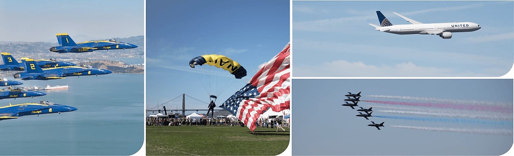
Fleet Week brings air shows, ship tours, and concerts to San Francisco every October.
01 — THE PROBLEM
The app had grown one page at a time for years. Key details sat three or four levels deep, under labels that did not match what visitors were looking for.
The 2022 app: nine equal tiles and long pages of small text.
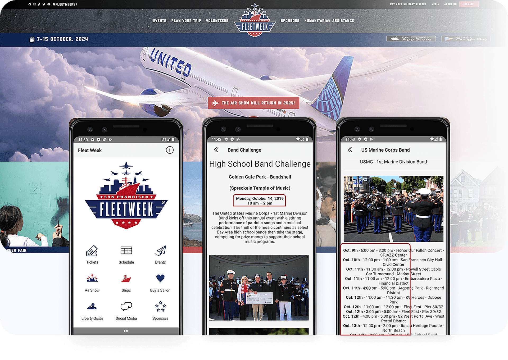
The app and the website looked like two different events.
02 — RESEARCH
I combined usability tests, app store reviews, and feedback from the event team. Then I narrowed many problems down to the few that mattered most.
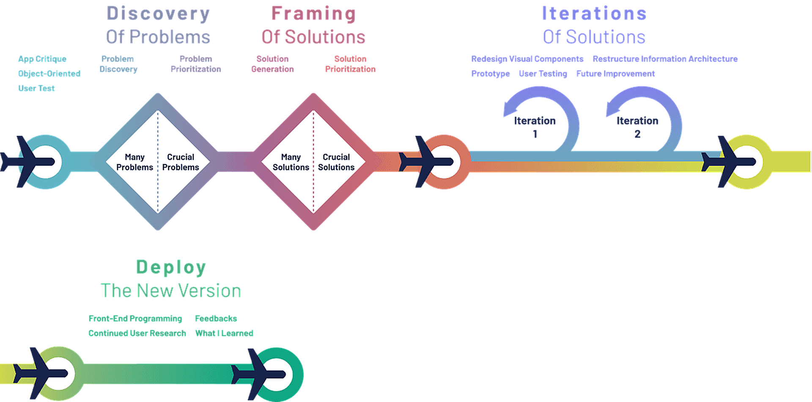
Discover, frame, iterate twice, then ship and keep learning.
USER JOURNEY · MILITARY VISITOR
Task: find a restaurant discount with a military ID.
STEP 1 · LAUNCH
"Where's the discount?"
STEP 2 · EXPLORE
"Maybe it's here…"
STEP 3 · BROWSE
"Nothing yet…"
STEP 4 · SCROLL
"Ah, I see the offers."
STEP 5 · REDEEM
"Great, but hard to read."
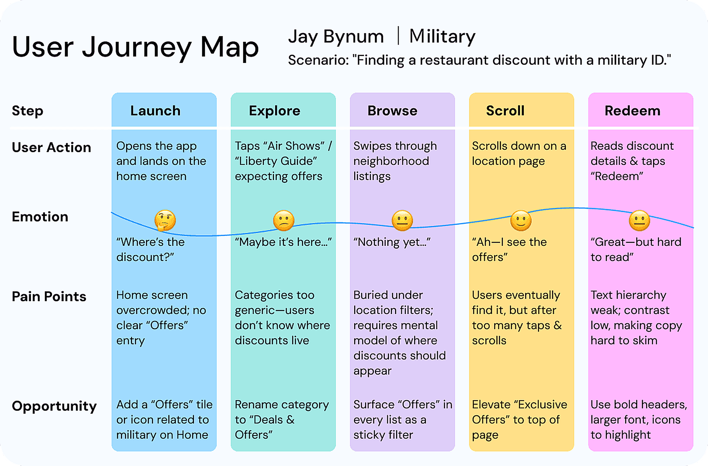
INFORMATION ARCHITECTURE AUDIT
The sitemap showed the same content in several places, and pages with nothing on them. "Buy Tickets" lived in four spots and "Schedule" in three.
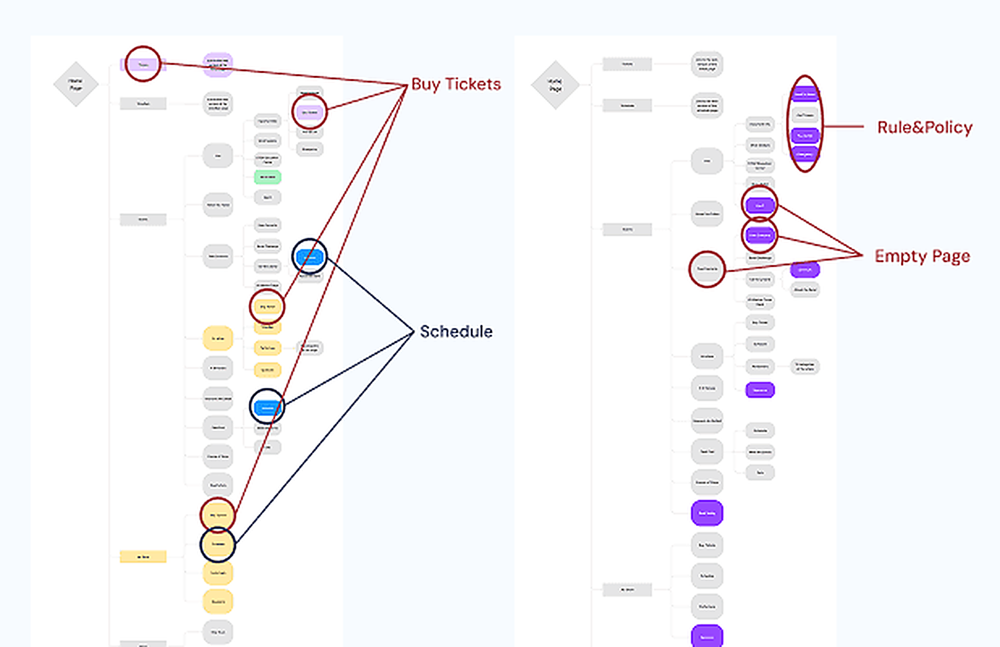
Duplicates and empty pages, circled.
CLEAR LABELS
Old tiles used vague icons and labels that were cut off, like "Volunteers & Fundr…". Each tile now has a clear icon and a short, full label.
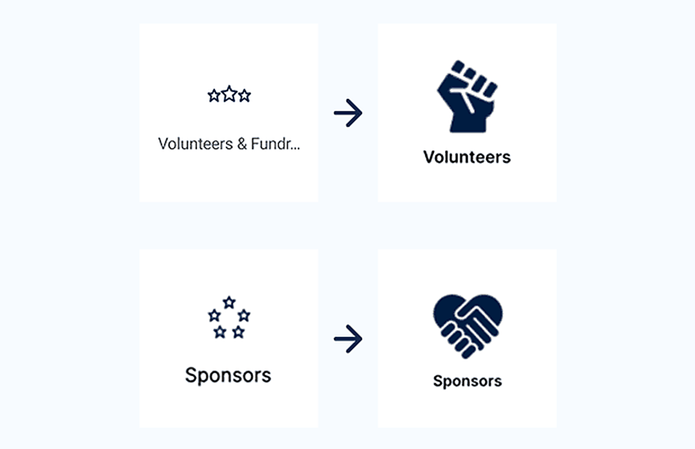
"Volunteers & Fundr…" became "Volunteers".
04 — VISUAL SYSTEM
2021
Thin line icons in mixed styles.
2022
A cleanup pass, still uneven.
2023 · MY REDESIGN
Solid icons in brand navy and red.
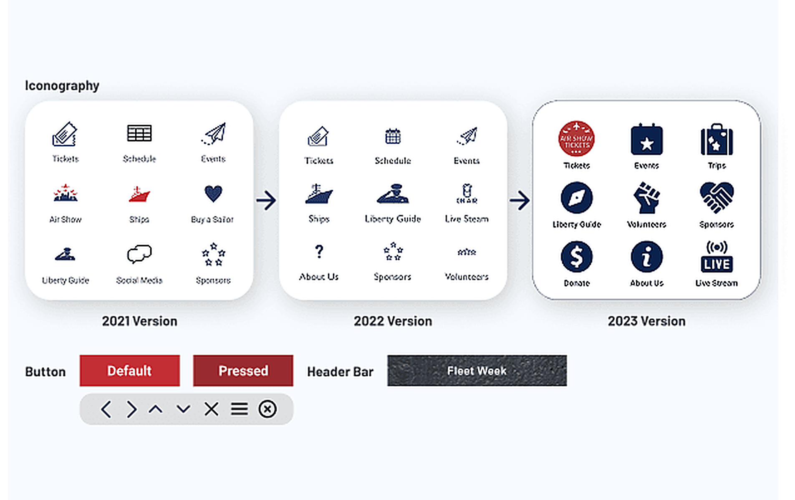
STYLE GUIDE
I took the navy #00234F and red #C32D34 from the Fleet Week logo. The guide sets type, color, and components for both web and mobile.
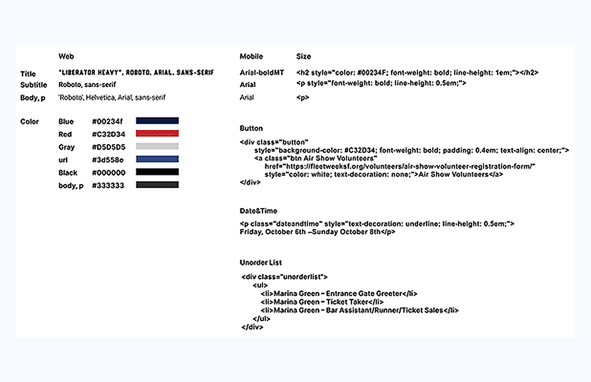
Fonts, colors, and component code in one place.
05 — READABILITY
Old event pages were long blocks of small, centered text. I left-aligned the text, added icons for Date & Time, Location, and Info, and made the ticket button stand out.
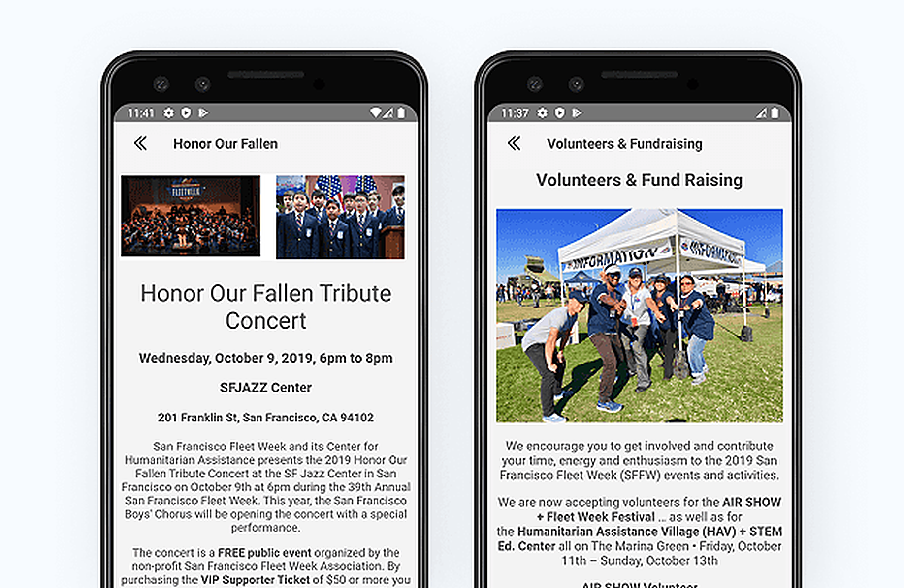
BEFORE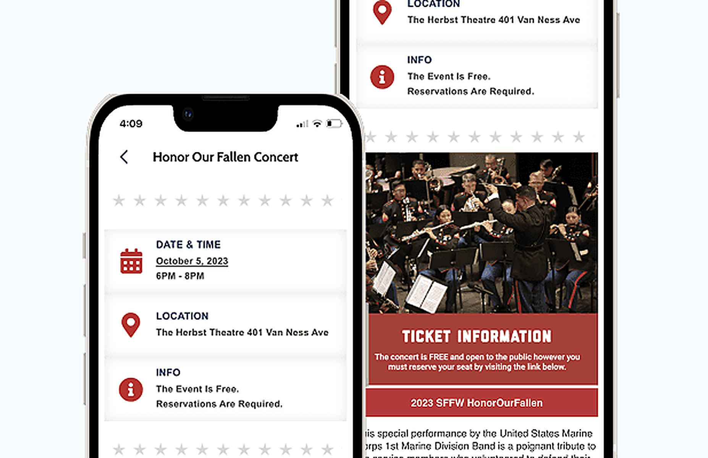
AFTER06 — LAUNCH
I built the new version in AppMachine with custom front-end code. It launched on iOS and Android before Fleet Week 2023.
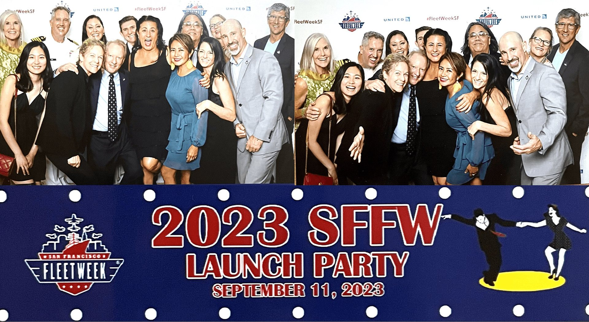
2023 SFFW launch party, September 11, 2023.
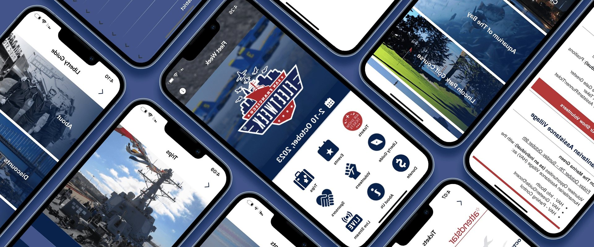
07 — WHAT I LEARNED
Visitors don't know how the event team is organized. They know what they want to do today.
Matching the app to the website and the brand made it feel official. Fewer one-off styles also made updates faster.
People used the app outdoors, in the sun, often on the move. Bigger text, higher contrast, and labeled icons helped everyone.
Finding a military discount went from about 7 minutes to under 45 seconds.